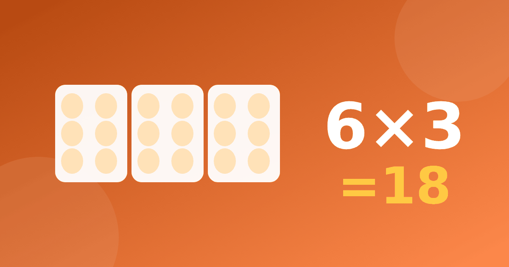

Шестёрка без слёз: как научить ребёнка считать на 6

Шестёрка редко даётся легко. Примеры на неё длинные, ответы не такие красивые, как у пятёрки или десятки, и дети часто путаются между 42 и 48. Хорошая новость в том, что таблица умножения на 6 в основном состоит из того, что ребёнок уже знает, а по-настоящему новых примеров остаётся совсем немного.
Почему шестёрка кажется трудной
Умножение на 6 даётся детям неравномерно. Одни примеры решаются сразу, другие требуют остановки. Дело не в способностях. Здесь впервые встречаются ответы, которые нельзя угадать по последней цифре, как у пятёрки, и нельзя просто удвоить, как у двойки. Кроме того, 6 × 7 и 6 × 8 похожи по звучанию и легко путаются. Не ругайте за путаницу, лучше дайте ребёнку опору, например приём с пятёркой, о котором речь пойдёт ниже.
Что ребёнок уже знает
Если порядок изучения такой, как обычно бывает в школе, к шестёрке дети подходят после двоек, троек, четвёрок и пятёрок. Значит, часть примеров уже знакома, просто записана наоборот. Например, 6 × 2 = 12, потому что 2 × 6 = 12. Так же 6 × 3 = 18, 6 × 4 = 24 и 6 × 5 = 30.
Покажите ребёнку эту связь и отметьте на листе знакомые примеры. Часто он сразу успокаивается, потому что видит, что работы меньше. Если здесь есть сомнения, вернитесь к статьям про таблицу умножения на 2 и 3 и про четвёрку.
Что действительно нужно выучить
Остаются четыре примера, в которых оба множителя больше пяти или близки к этому.
- 6 × 6 = 36
- 6 × 7 = 42
- 6 × 8 = 48
- 6 × 9 = 54
Пример 6 × 10 = 60 ребёнок решает по правилу десятки, а об этом правиле рассказано в статье про умножение на 5 и 10. Примеры с семёркой и восьмёркой потом встретятся ещё раз, когда вы дойдёте до таблицы на 7 и 8.
Как запомнить шестёрку в таблице умножения
Универсального секрета нет, но есть два приёма, которые помогают многим детям. Предложите оба и дайте выбрать тот, что ближе.
Первый приём. Шесть — это пять и ещё один. Значит, 6 × 7 равно 5 × 7 плюс ещё 7, то есть 35 + 7 = 42. Точно так же 6 × 8 = 40 + 8 = 48, а 6 × 9 = 45 + 9 = 54. Пятёрку ребёнок знает хорошо, и ему остаётся прибавить второе число.
Второй приём. Шесть — это дважды по три. Сначала умножаем на три, потом удваиваем. Для 6 × 7 берём 3 × 7 = 21 и удваиваем, получается 42. Для 6 × 9 берём 3 × 9 = 27, удваиваем и получаем 54.
Закономерность и примеры из жизни
Когда шестёрку умножают на чётное число, последняя цифра ответа совпадает с этим числом. Проверим вместе: 6 × 2 = 12, 6 × 4 = 24, 6 × 6 = 36, 6 × 8 = 48. В каждом ответе последняя цифра такая же, как у второго множителя.
Это хорошая проверка. Если ребёнок назвал для 6 × 8 число 46, вы можете спросить, на какую цифру оно должно заканчиваться. Он сам заметит, что нужна восьмёрка.
Шесть яиц в упаковке, шесть граней у кубика, шесть ножек у жука. Если купили пять упаковок яиц, получится 6 × 5 = 30 яиц. Для семи упаковок нужно 6 × 7 = 42. Пусть ребёнок сам придумает ситуацию с шестёркой и посчитает. Так примеры перестают быть набором чисел. Ещё можно спросить, сколько ножек у трёх жуков, и получить 6 × 3 = 18, или сколько граней у четырёх кубиков, и получить 24. Такие вопросы занимают полминуты, но дают смысл каждому ответу.
Как тренироваться
Не пытайтесь выучить всё за один вечер. Лучше взять один-два примера и вернуться к ним на следующий день. Если ребёнок ошибается, не торопите его и не подсказывайте сразу, а предложите прибавить пятёрку или удвоить тройку.
Вот примерный план на неделю, который можно менять под себя.
- В первый день повторите знакомые примеры с двойкой, тройкой, четвёркой и пятёркой.
- Во второй день разберите 6 × 6 и 6 × 7 с приёмом пять и ещё один.
- В третий день добавьте 6 × 8 и 6 × 9.
- В четвёртый и пятый дни смешивайте все примеры вперемешку и возвращайтесь к тем, где были ошибки.
Сколько времени отводить на занятие, подробно обсуждается в статье про время занятий в день.
В тренажёре можно потренировать отдельный столбец, а при затруднении нажать «Показать визуально» и увидеть шесть рядов по несколько предметов. Часть тренажёра бесплатна, таймеров на вопросах нет, так что думать можно спокойно.
Хватит десяти минут в день. Когда ответы на шестёрку станут уверенными, смешайте их с примерами на другие числа, чтобы ребёнок не привык к одному порядку.